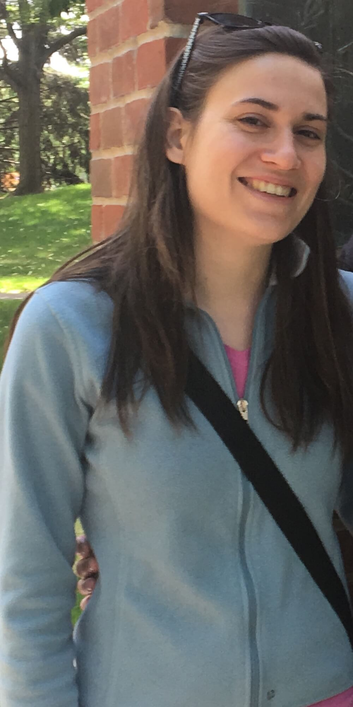

Hi! I’m Cara Weggler
I’m a student, freelance app developer and musician.
I grew up in Tulsa, OK
I started playing violin/fiddle at the age of 8
-
‘10- Graduated with a Bachelor of Arts from Macalester
College.
I value my education both in institutions and out of them. - ‘15- Took an Intro to Programming course in Python and I have been hooked ever since.
- ‘15- Got my foot in the door working a job at a software company, When I Work, as a Customer Support professional
- ‘16- Interned with an Android development team
- ‘17- Enrolled in Saint Paul College’s Mobile App Development Certificate and love making iOS and Android apps.